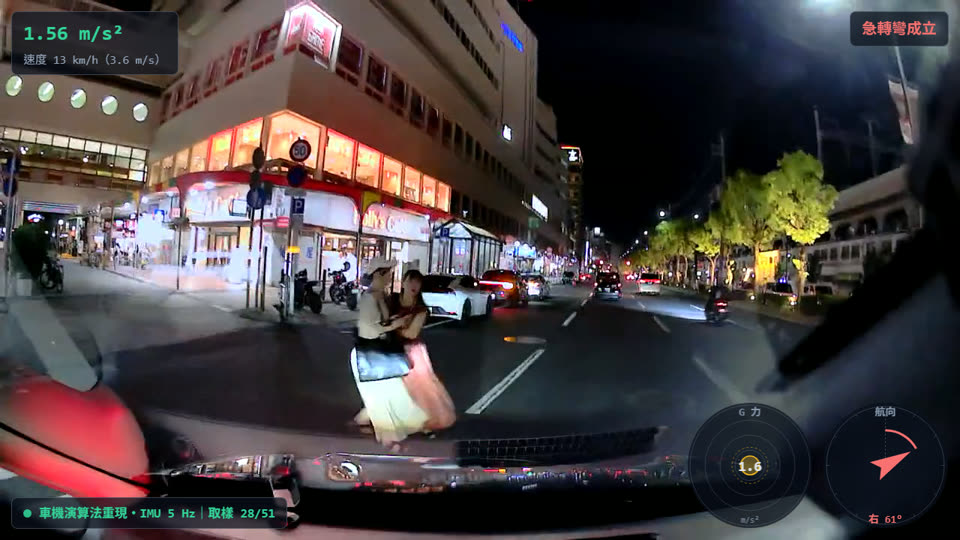
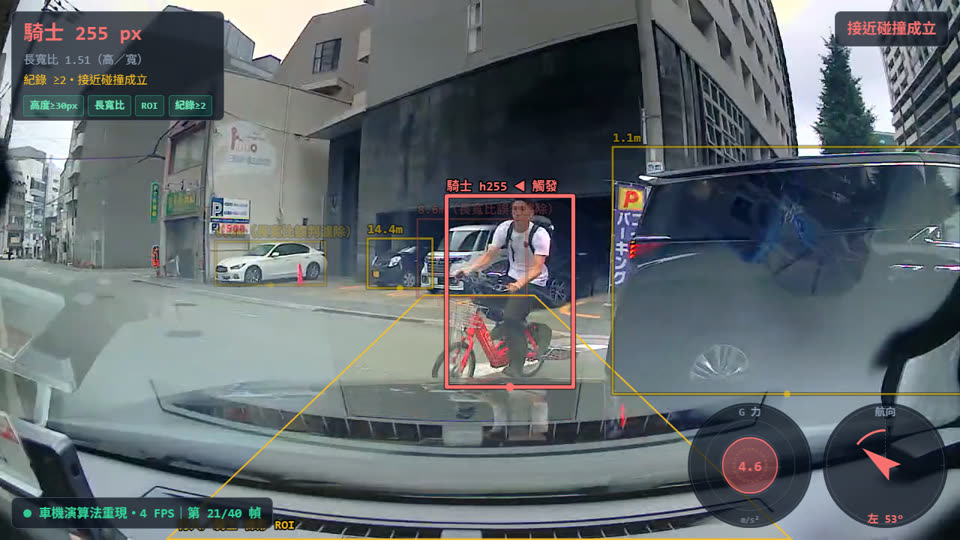
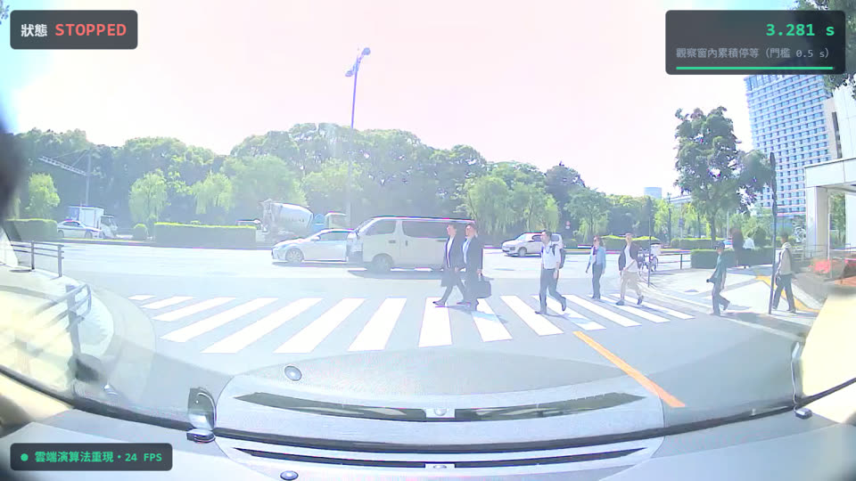
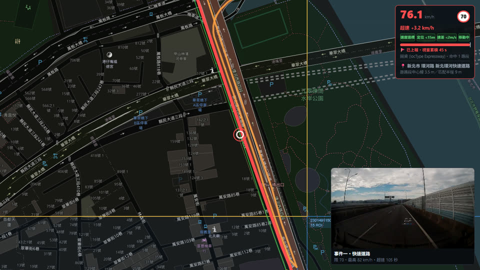
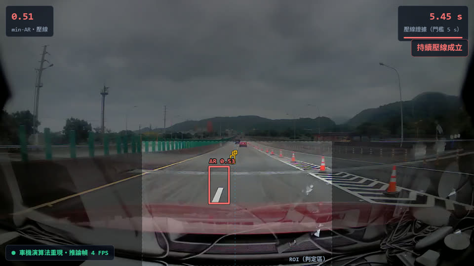

商用車隊的行車記錄器結合車上 AI，即時偵測接近碰撞、危險駕駛、違規未停、持續壓線與超速等事件。 每一頁是一套實際上線的演算法：以真實道路事件的影片與逐幀數據， 在網頁上重現演算法的每一步判斷——可播放、可逐幀、可拖曳驗證。

車機從 15 秒 IMU 感測窗即時萃取特徵並分類。人工標記 172 筆：Precision 98.2%、Recall 92.4%。

急煞觸發後即時解出前車距離與接近率，四條件判定碰撞風險；行人／騎士不測距、改用梯形 ROI——全程車機端運算，28 筆明確人工預期全數判對、16 筆反例 0 誤觸。

日本法規要求於「止まれ」標誌前完全靜止。演算法直接從影像量出靜止秒數，Precision 95.2%、車機誤報攔截 98%。

工程級逐點回放：一段 9 分鐘行程內兩次超速，每一次圖磚查詢、道路匹配與速限決策都能重播對質；上線誤判率 1.9%。

彎道、壓線方向、GPS 可信度三重守門；289 段測資逐段人工標記：觸發 7/7 全真、彎道誤判 2/2 攔截。